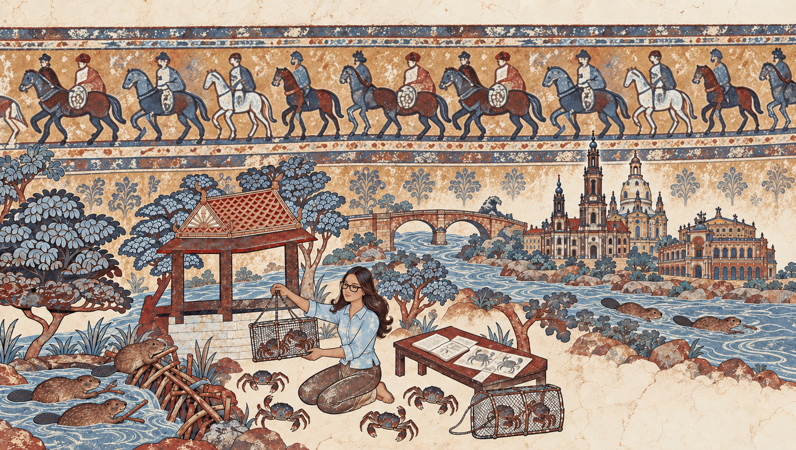

Skip to content

Hydraulic engineering · TU Dresden
Scientific
researcher
River habitats and freshwater ecosystems.
From Laos, now based in Dresden. Her research combines habitat modelling, hydraulic simulations, and field measurements.
Projects
Current research at TU Dresden.
Publications
Articles, conference papers, and other research.